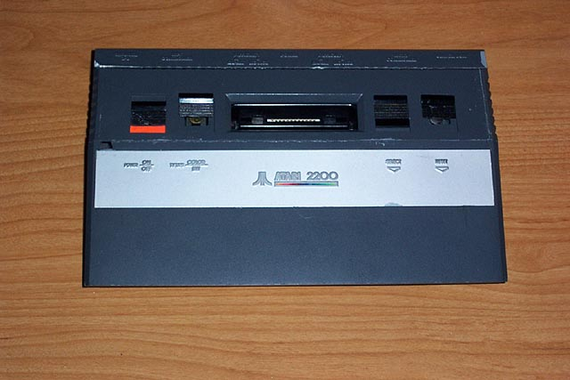
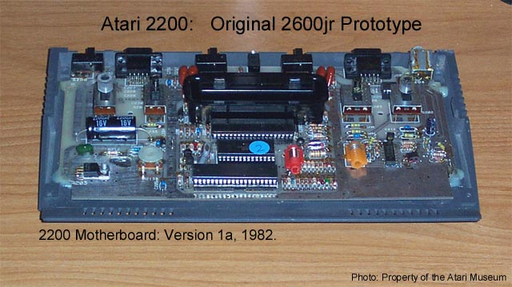

Atari 2200
(2600jr Original Prototype)

Regan Cheng had drawn up many design sketches
of various
Portable
Atari Designs for a project called Atari 2200, however
it seems this moniker was also used for
another project, a
new low cost, low profile Atari VCS was
updated high tech
styling in a remarkably small package.

The actual component boards inside the
Atari VCS 2600's since the
original unit rolled off the assembly
lines in 1977 have always
been far smaller then their old woodgrained
cases implied.
In response to another project: "VAL"
or the Atari 2000, an all in one
low cost Atari VCS design by Steve Mayer
and Gregg Squires in the
WCI NY Atari Labs, the Atari 2200 was
created. The basic
idea remained the same, a low cost system,
small and with a
newer and more update to date look for
the aging VCS 2600.
This system was readied by 1983 and began
to ship in 1984 with
the new PROLine Joysticks (which would
later be included with
the Atari 7800) The
Systems were still labelled as Atari
Video Computer Systems, Model
#2600 when they were shipped
in 1984.
On July 2, 1984 Atari, Inc was sold to Tramiel Technologies
Limited and video game production was
canceled. TTL would
rename itself Atari Corporation.
Its sole purpose, to sell Computer
Systems. However Nintendo
would later come along and ignite the
flame once again onto the Videogaming
scene and Sega would
soon follow. Atari Corp
management, seeing this opportunity for
a fresh injection of capital tapped into
its store of Video Game Division
assests from the purchase of the company
from Warner Communications.
One such assest was the design for a new
low cost, high tech styled
version of the legendary Atari Video Computer
System. Marketing
changed its name to: The
Atari 2600jr and packaged it into a small
lunchbox styled and sized box with carrying
handle. The included
1 joystick, the old CX-40 model from the
original Atari VCS systems
and also packed in Combat with the system
and the Atari 2600jr
was put onto into the market with its
"Under 50 Bucks" TV Commercial.
{kind=link}